Wallas H. S. Santos
Ray Tracing
A implementação do Ray Tracing deste trabalho tem como objetivo ser o mais o mais simples possível. Porém, possui as principais características da técnica.
Introdução
O Ray Tracing é uma técnica de renderização com o objetivo de simular o trajeto da luz na iluminação de objetos de um cena. A imagem que se forma na visão humana depende de como os materiais dos objetos se comportam ao receber fótons, podendo absorver toda a luz (corpos negro), refletir (espelho), refratar (objetos transparentes) ou refletir determinadas frequências que formam as cores visíveis para o olho humano. Uma abordagem direta para reproduzir um ray tracing é através da simulação de disparos de raios de uma ou mais fontes de luz por toda a cena e capturar os raios refletidos para calcular suas respectivas cores dos objetos por equações da óptica da física.
Porém a abordagem direta pode não ser computacionalmente a melhor forma de fazer na prática. Disparar diversos raios de forma aleatória pode não obter um resultado satisfatório por não capturar os raios relevantes para renderização, além de ser muito ineficiente. Uma das formas de contornar esse problema é calculando o caminho inverso do raio que chega a visão do observador (backward ray tracing). Para iluminação também pode ser usado modelos aproximados que chegam a resultados satisfatórios como o modelo de Phong. Nas seções seguintes serão descritos essas técnicas para produzir um Ray Tracing relativamente eficiente e com uma boa qualidade de imagem.
Ray Casting
O primeiro passo da técnica é detectar os objetos a serem renderizados na cena através do ray casting. Para isso deve ser definido um frustum de visualização do observador que é o volume que define o limite da visão. Esse frustum também é importante para definir o plano de projeção onde serão projetados os objetos da cena. O plano de projeção irá definir a imagem 2D da cena a ser renderizada.
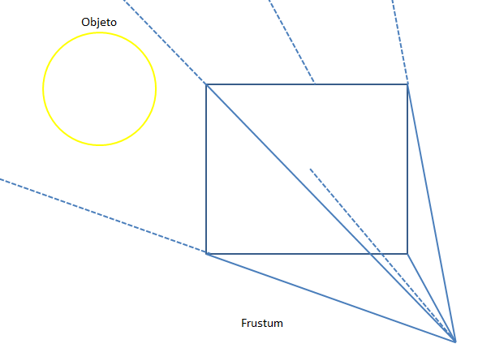
Esquema de um frustum.
O plano de projeção deve ser dividido em uma espécie de grade, onde cada célula dessa grade é um ponto que conterá uma cor da imagem da cena. Para definir cor desta célula é necessário descobrir que ponto do objeto está sendo projetado. O procedimento consiste em "disparar" um raio da origem do observador passando pelo centro de uma célula do plano de projeção até um certo limite (o limite do frustum por exemplo). Para cada raio, itera-se por todos os objetos até que encontre um objeto ou nada e em seguida guarda-se este ponto para as próximas etapas. Em caso de interseção com mais de um objeto, toma-se em conta o mais próximo. Objetos transparentes ou reflexivo serão descritos mais adiante.
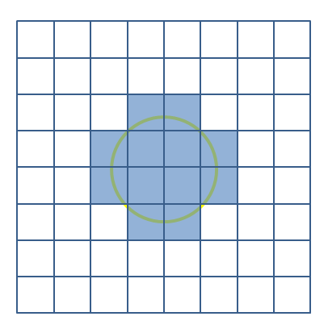
Grid do plano de projeção.
Na etapa de ray casting deve-se iterar por todos os objetos da cena e definir seus pontos que serão projetados. Cada objeto deve ter uma função que defina a interseção para um dado raio. No caso de planos e esferas podem ser calculados por suas respectivas funções paramétricas. Em geometrias complexas geralmente secciona-se o objeto em um conjunto de polígonos simples que seja mais fácil computar o ray casting, na maioria dos casos em triângulos. A imagem a seguir mostra o resultado de um raycasting aplicado em uma cena com várias esferas. Cada pixel pertecente a um objeto foi atribuido com cor branca para indicar a presença na projeção.
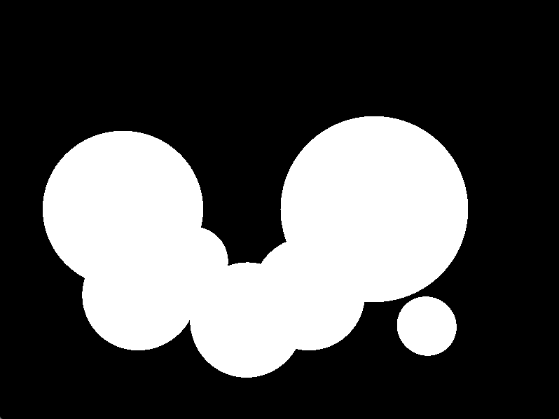
Resultado do ray casting.
Modelo de Phong
Para cálculo de iluminação em um ponto, optou-se em utilizar o modelo de Phong. O modelo de Phong é um das técnicas mais utilizada para cálculo de Iluminação em sistemas de computação gráfica. Seu cálculo é simples e rápido de computar até mesmo por pixel e ainda assim obtém resultados bastante satisfatório.
A iluminação por phong é dividida em 3 componentes principais: ambiente, difusa e especular. A iluminação ambiente é uma constante que adiciona uma quantidade mínima de iluminação em todos os objetos. Essa componente é uma simplificação dos raios refletidos de toda cena, no qual ilumina minimamente um ponto que não teve incidência de raios diretamente de uma fonte de luz. A iluminação difusa depende dos raios de incidência da fonte de luz e a normal no ponto, o resultado depende do ângulo de incidência. A iluminação especular depende do raio incidente refletido do objeto (necessário a normal) e da visão do observador, na qual pontos refletidos que vão direto ao plano possui maior saturação em sua cor.
A seguir, um pseudo algoritmo para implementação do modelo de phong de um pixel em um ponto. As funções de algebra vetorial podem ser implementadas ou serem utilizadas de uma biblioteca de algebra (GLM). Lembrando que essas funções estão presentes por padrão do GLSL (OpenGL Shading Language).
// Tipos
// real - tipo genérico de valor unitário
// vetor - tipo genérico de tupla n-dimensional
// Parâmetros locais
// vetor normal - Normal no ponto
// vetor pos - Posição do ponto
// vetor corPonto - Cor do ponto no objeto
// vetor espPonto - Fator de cor especular
// Parâmetros globais
// real ka - Constante ambiente
// real kd - Constante difusa
// real ks - Constante especular
// real brilhoFat - Fator de brilho da especular
// Saída
// vetor cor - cor final do ponto
função calculaCor(vetor pos, vetor normal, vetor corPonto, vetor espPonto)
vetor ambiente = vetor(1); // Inicialização de vetor com valor 1 em todos componentes
vetor difusa ;
vetor especular ;
vetor dirObservador = posObservador - pos;
para cada vetor luzPos em todas as luzes
vetor dirLuz = normaliza(luzPos-pos);
difusa += corPonto * kd * max( 0, prodEscalar(normal , dirLuz)); // Produto escalar
refletido = reflexao(-dirLuz, normal);
real especularCor += max(0, prodEscalar(refletido, dirObservador));
especular = espPonto * ks * pow(especular, brilhoFat);
fim para
cor = ka * ambiente + kd * difusa + ks * especular;
retorna cor;
fim função
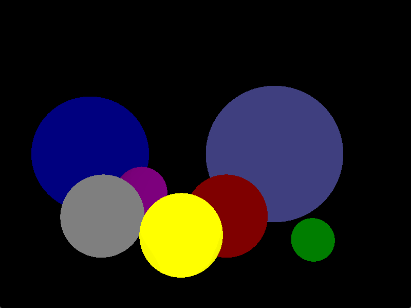
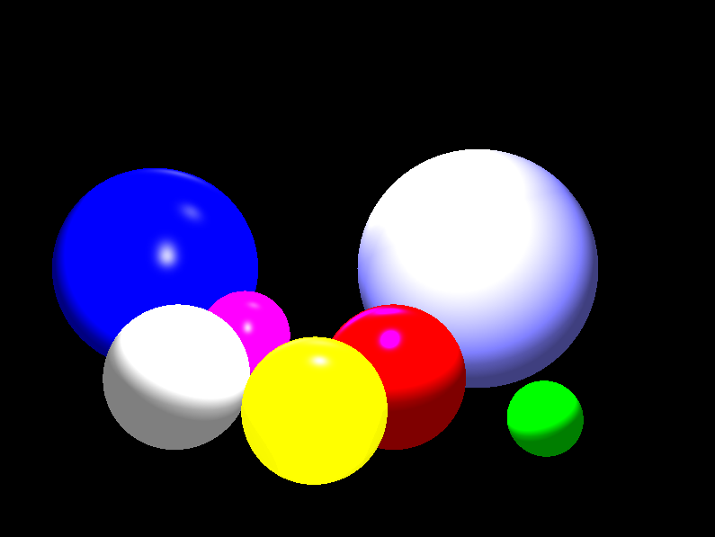
Imagens para ambiente, ambiente + difusa e ambiente + difusa + especular respectivamente.
Sombra
A sombra é o resultado da oclusão do objeto por outro impedindo a incidência de luz. Assim como na natureza, quando a luz não atinge uma superfície de um objeto (se não for emissor de luz), este estará mais escuro que os demais. A inclusão dessa característica no ray tracing gera mais realismo a cena e também dar uma idéia melhor de localização dos objetos na cena. As imagens a seguir mostram a mesma cena adicionado de um plano xadrez sem sombras e posteriormente com sombra.
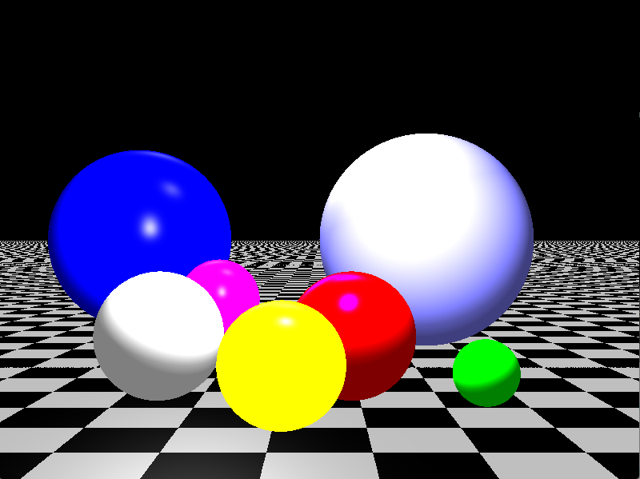
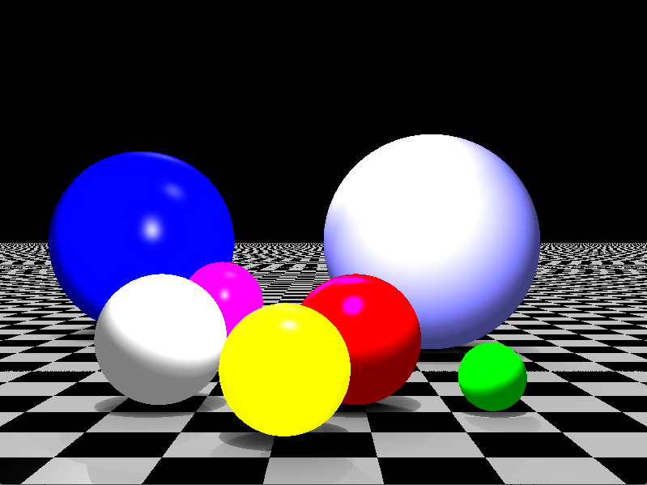
Comparação da renderização de uma cena com e sem sombra.
No processo explicado anteriormente da iluminação de objetos, para incluir sombra deve-se testar para cada fonte luz que está iluminando se este está ocluso, se estiver, naquele ponto não será adicionado contribuição de iluminação para uma dada fonte de luz. Isso pode ser feito removendo as componentes difusas e especular.
// Calcula a interseção de um raio vindo da origem passando pela direção em um objeto.
// funcao interseccao(vetor origem, vetor direcao, objeto objeto)
função calculaCor(vetor pos, vetor normal, vetor corPonto, vetor espPonto)
(...)
para cada vetor luzPos em todas as luzes
(...)
para cada objeto em todos os objetos
se intersecao(pontoPos, luzPos, objeto)
// Não adiciona iluminação no ponto
senão
// Continua calculando a iluminação
(...)
fim se
fim para
fim para
cor = ka * ambiente + kd * difusa + ks * especular;
(...)
retorna cor;
fim função
Anti Aliasing
Um efeito comum em uma renderização é presença de aliasing ou cerrilhado. O aliasing é resultado de um mudança de frequência abrupta que é mais presente em cenas artificiais. Em imagens mais naturais (fotografia) essa transição é geralmente mais suave. A técnica mais comum de anti-aliasing é o multisample (super-amostragem), que consiste em gerar uma amostra maior de resolução do plano de projeção que a resolução final da imagem resultante. A forma mais comum é gerar 4 pontos adicionais para uma célula além do ponto central e então calcular a média do valor da cor deste 5 pontos e atribuir ao ponto central.
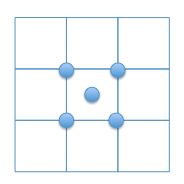
Esquema dos pontos na grade para realizar o multisample.
Imagem com Aliasing.
Imagem com anti-Aliasing por multisample.
Reflexão e Refração
A reflexão e a refração dos objetos no Ray tracing são as características mais marcantes da técnica. Até então, todo processo descrito tem resultados equivalentes produzidos pelo OpenGL. Como foi comentado anteriormente, o Ray tracing simula o comportamento da luz, então a cor de um ponto de um material que reflete será igual a cor do ponto de um raio refletido de outro ponto.
Para ilustrar melhor essa característica da técnica, a cena de exemplo foi modificada para ter paredes e tetos.
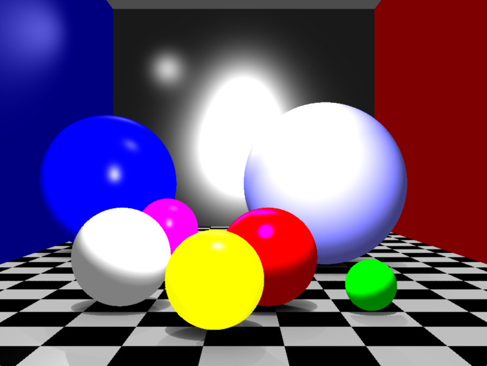
Cena de exemplo com paredes e tetos.
Na prática a reflexão é implementada realizando uma recursão na função de traçar raios. Caso um material seja reflexivo, calcula-se o raio refletido utilizando a normal e o raio incidente e então é invocado a mesma função para obter a cor deste ponto. É claro que pode ocorrer do raio refletido ter origem de outro raio refletido de um material reflexivo. Para que o programa não entre em loop infinito deve-se definir um critério de parada, normalmente pode ser um número que limita a quantidade de vezes que irá fazer a recursão. O pseudo algoritmo abaixo mostrar como implementar esse comportamento de reflexão.
// Retorna a cor
função traçarRaio(vetor raio)
para cada objeto em todos objetos faça
se intersecao(raio, objeto) então
se objeto é reflexivo
//função que retorno o ponto de interseção de um raio em um objeto
vetor ponto = getInterseção(raio, objeto);
// Retorna normal do ponto em dado objeto
vetor normal = getNormal(ponto, objeto);
vetor refletido = reflexao(raio, normal);
retorna traçarRaio(refletido);
senão
// Realiza o modelo a iluminação normalmente
vetor cor;
(...)
retorna cor;
fim se
fim se
fim para
fim função
Após finalizar a recursão dos raios refletidos, a cor do objeto é retornado ao material o refletido. Com essa cor pode ser feito também uma mesclagem com a cor do objeto. Para o trabalho desta página foi realizado uma média entre a cor do objeto e a cor refletido que produz resultados satisfatórios. Existem outras formas de fazer essa mistura de cor, vai depender do efeito desejado que apareça no material. O resultado é mostrado na imagem abaixo:
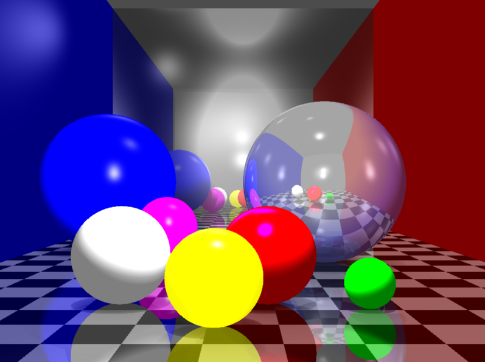
Reflexão nos objetos da cena.
A refração originalmente, deveria ser calculado pelas leis de Snell's que mostra a relação do ângulo de incidência e refratado e os índices de refração de cada meio.
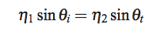
Lei de Snell.
Porém, existem situações que ocorre total reflexão interna (total internal reflexion - TIR), no qual o raio de incidência forma um ângulo crítico na interface, e os raios transmitidos tornam-se inválidos como mostrado na imagem mais abaixo. Logo, a equação de Snell possui uma condição para ser usada para calcular raios refratados.
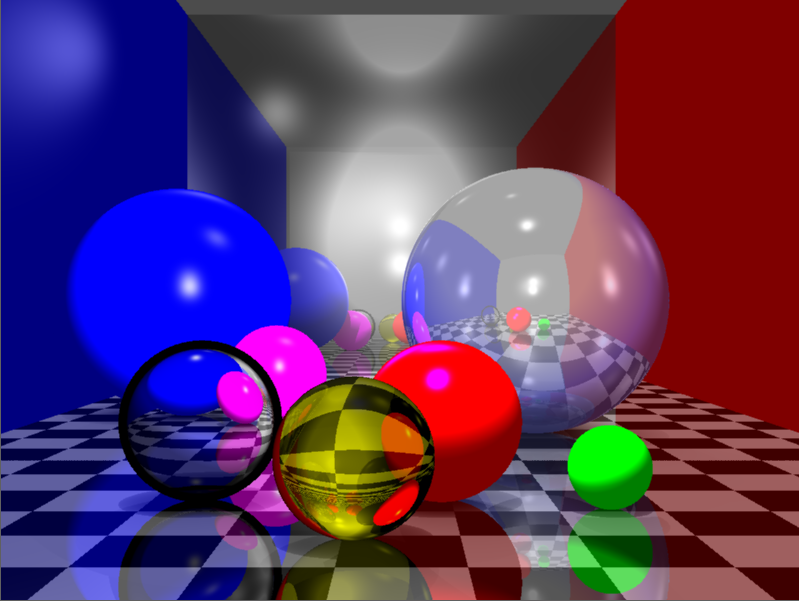
Refração errada na esfera transparente por não tratar os ângulos críticos da refração.
Nota: a esfera transparente amarela apesar de invertida está correta, isso é uma característica do seu índice de refração.
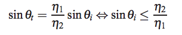
Lei de Snell válida somente quando não está em total reflexão interna.
A solução para resolver esses casos especiais é utilizar as equações de Fresnel. Resumidamente um fóton ao incidir em um interface possui dois caminhos a seguir: transmissão que é seguir em frente ou reflexão que é ter ser curso desviado. Os fatores que modelam essa decisão são a transmitância T e a refletância R que são dadas pela relação T + R = 1. No algoritmo esses fatores podem ser usados para definir que função será utilizada para um dado ângulo de incidência. Quando T = 1, utiliza-se a refração pela lei de Snell, quando R = 1, ou seja TIR, utiliza-se a reflexão por recursão, caso seja intermediário pode ser utilizado uma mistura de iluminação por reflexão e refração como simplificação do modelo.
Para definir a quantida de R e T em um ponto, depende é claro do índices de cada meio. As equações de Fresnel logo abaixo mostram como obter esses valores.
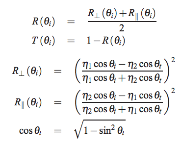
Equações de Fresnel.
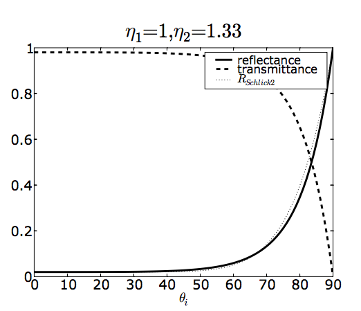
Gráfico de relação de R e T para dois com índice de refração 1 (Ex. Ar) e 1.33 (Ex. Água). Fonte.
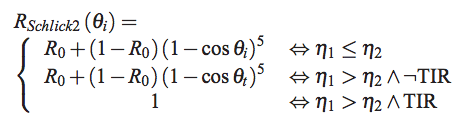
Aproximação de Schlick.
Por fim, o resultado do final do Ray Tracing com a refração corrigida utilizando a aproximação de Schlick:
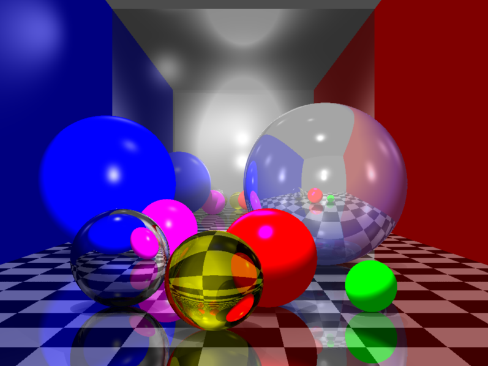
Refração e a cena final renderizada utilizando Ray Tracing.
Conclusão
O Ray tracing é uma técnica que gera imagens realista de forma simples e satisfatória. Porém, atualmente ainda é limitada sua utilização em tempo real, pois como foi visto, possui cálculos custosos que limitam o algoritmo nesse aspecto. Possui mais aplicações em renderização de imagens estáticas e vídeos. Para atingir o tempo real, técnicas de otimização devem ser aplicadas e/ou desenvolvidas para alcançar este objetivo em determinados casos de uso.Código Fonte
Abaixo o link para o código fonte para o exemplo apresentado. O código possui alguns artifícios a mais omitidos na explicação para mantê-la mais didática possível. Dentre os adicionais, destaca-se o paralelismo da execução para acelerar a renderização e aplicação de atenuação na iluminação, que consiste em diminuir a iluminação dos pontos mais distantes das fontes de luz, para melhor efeito visual.
Referências
GLM - OpenGL Mathematics. http://glm.g-truc.net/0.9.5/index.html
Phong, Bui Tuong. "Illumination for computer generated pictures." Communications of the ACM 18.6 (1975): 311-317.
Greve, Bram de. Reflections and Refractions in Ray Tracing. Disponível em http://graphics.stanford.edu/courses/cs148-10-summer/docs/2006--degreve--reflection_refraction.pdf. Introduction to Computer Graphics and Imaging. Stanford University. 2006.